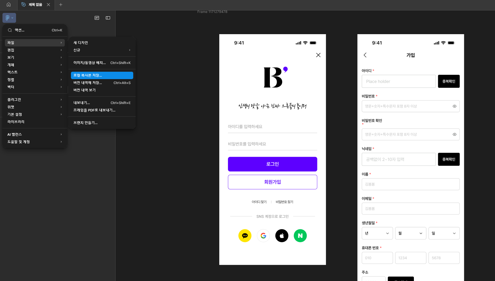
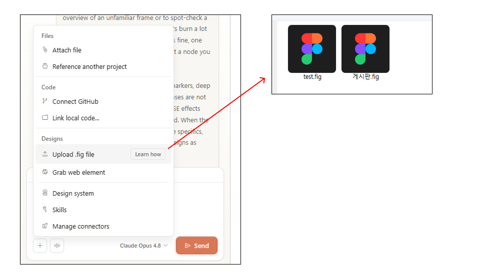
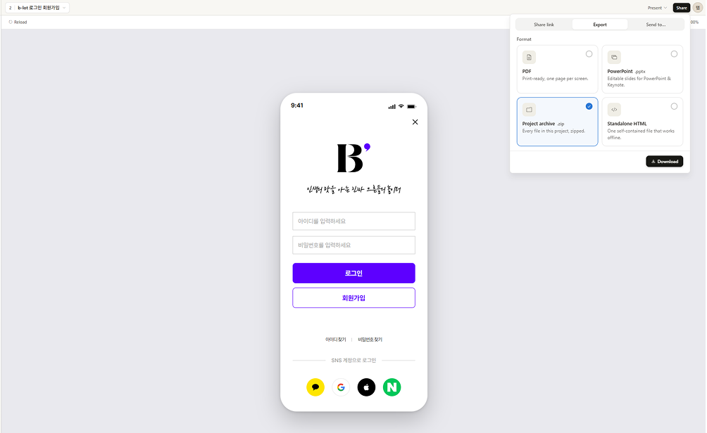

Figma에서 .fig 파일을 추출해 Claude Design에 올리고, 프롬프트로 마크업을 생성한 뒤 zip으로 내려받아 Claude Code로 다듬는 전체 과정을 단계별로 정리하였다.
검증 결과 현 업무 환경에서 가장 즉시 활용 가능한 방식은 Claude Design이었다. 이 가이드는 그 방식을 실무에서 그대로 따라 할 수 있도록 다음 다섯 단계로 정리한다.
Figma 계정(파일 추출 권한) · Claude 계정(Claude Design 이용) · 로컬 작업 환경(VS Code 등) · Claude Code(터미널/IDE). 별도 MCP·API Token 설정은 필요 없다.
원본을 그대로 올리면 미사용 페이지·숨김 레이어·여러 작업 버전까지 함께 해석돼 정확도와 속도가 떨어진다. 또 추출 전 정리(불필요한 레이어 삭제·프레임 분리)를 원본에서 하면 디자이너의 실제 작업 파일이 훼손되고, 팀이 공유·동시 편집 중인 파일과 충돌할 수 있다. 복사본에서 필요한 화면만 남겨 정리하면 원본을 건드리지 않으면서 가볍고 깔끔한 .fig를 만들 수 있다.

그림 1. Figma에서 .fig 파일 내보내기.
화면 단위로 파일을 나눠 내보내면 한 번에 생성되는 결과물 범위가 명확해져 프롬프트도 단순해지고 결과 편차도 줄어든다. "한 파일 = 한 작업 단위"를 권장.

그림 2. Claude Design에 .fig 파일 업로드.
용량이 큰 파일은 업로드·해석 시간이 길어진다. 미사용 에셋·페이지를 정리한 가벼운 .fig를 올리는 것이 안정적이다.
같은 디자인이라도 프롬프트에 따라 결과물 품질이 크게 달라진다. 출력 형식 · 기술 스택 · 제약 조건을 처음부터 명시하면 후속 수정량이 줄어든다.
| 항목 | 이렇게 (권장) | 이러면 곤란 |
|---|---|---|
| 기술 스택 | "React + CSS Modules로" 처럼 명시 | 스택 미지정 → 매번 다른 형태 |
| 레이아웃 방식 | Flex·Grid 재구성 / 좌표 1:1 중 택1 | 미지정 → 절대좌표 남발 |
| 컴포넌트화 | "반복 요소는 컴포넌트로 분리" 지시 | 중복 마크업 양산 |
| 네이밍 | 규칙을 먼저 못 박기 | Button·PrimaryButton 혼재 |
| 범위 | 화면 단위로 끊어 요청 | 전체 한 번에 → 품질 저하 |
한 번에 완벽을 노리기보다, 생성된 결과를 보고 "헤더 여백을 디자인대로 24px로", "버튼을 공통 컴포넌트로 묶어줘" 처럼 후속 지시로 다듬는 방식이 효율적이다.

그림 3. 프롬프트 작성 후 생성된 마크업 미리보기.
다운로드 직후 결과물은 아이콘·이미지가 플레이스홀더이거나 레이아웃이 디자인과 미세하게 다를 수 있다. 다음 단계(Claude Code)에서 정리한다.
Claude Design 결과물은 빠르지만 프로젝트 컨텍스트가 없다(기존 컴포넌트·디자인 시스템 미반영). 압축 해제한 결과물을 기존 프로젝트에 넣고 Claude Code로 통합·정리한다.
| Claude Code로 보정할 항목 | 왜 필요한가 |
|---|---|
| 기존 컴포넌트 재사용 | 중복 컴포넌트(Button / PrimaryButton 혼재) 방지 |
| 디자인 토큰 치환 | 하드코딩된 색·간격을 단일 소스로 정리 |
| 네이밍 통일 | 코드베이스 컨벤션 일관성 확보 |
| 접근성 · SEO | AI 생성 코드의 누락 보강(검토 필수) |
| 레이아웃 미세 보정 | 여백·정렬을 디자인 수치와 일치 |
① 구조·컴포넌트 통합 → ② 토큰·네이밍 정리 → ③ 접근성/SEO → ④ 픽셀 보정 순으로 큰 것부터 다듬으면 재작업이 줄어든다. 각 단계마다 변경 계획을 먼저 확인하는 습관을 권장.
AI 생성 코드는 보조 도구다. 빠른 초안 생성에는 탁월하지만, 실서비스 반영 전에는 사람의 검토가 필수다.